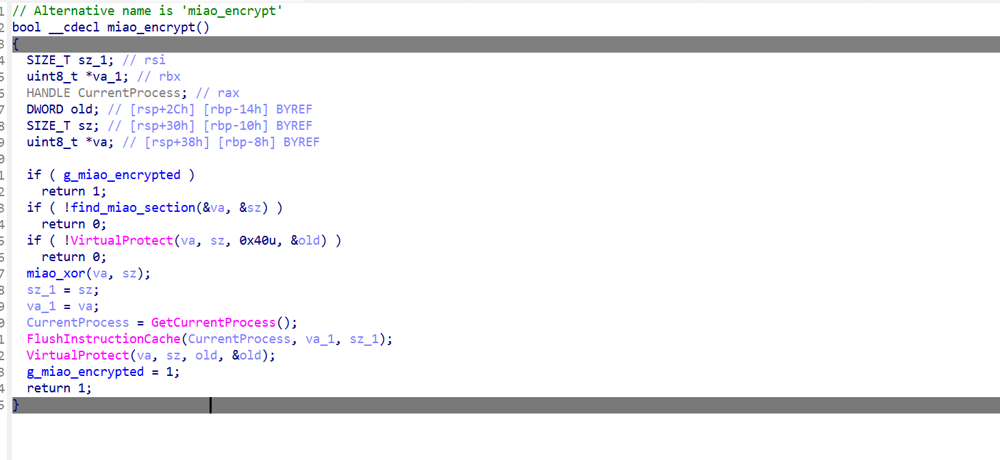
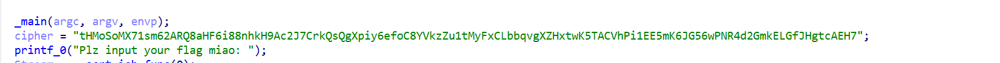
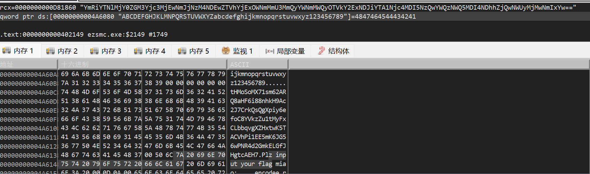
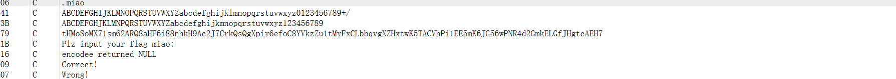

这个也是打鹏城杯遇到的一道题 鹏城杯我基本上还是没办法自己完整复盘 只能说把唯一我可以看懂的题目里面涉及的知识点重新搞定 SMC 相关知识点。。
首先读码
stream（流）
在 C 语言中，Stream（流）是一个抽象概念，你可以把它想象成一根连接程序和外部世界的“管子”。数据就像水一样，顺着这根管子流进或流出程序。
在这段代码中，Stream 特指标准输入流。下面是详细解释：
1. Stream 在代码中是如何获取的？
代码里有这样一行：
Stream = __acrt_iob_func(0);- 在 Windows 的 C 运行时库（CRT）中，
__acrt_iob_func(0)是一个内部函数，它的作用是获取 编号为 0 的设备句柄。 - 在计算机底层，编号 0 永远代表
stdin(Standard Input)，也就是你的键盘。 - 所以，这里的
Stream指针实际上就指向了你的键盘输入缓冲区。
2. 为什么不直接用键盘，而要用“流”？
使用“流”的概念是为了统一操作。对于程序来说，无论数据是从键盘输入、从文件读取，还是从网络传过来，它都可以用同样的函数（如 fgets）去处理。
- 如果是键盘： 数据流就是你敲击按键产生的字符。
- 如果是文件： 数据流就是文件里的二进制或文本内容。
3. fgets(input, 1024, Stream) 这一行具体在做什么？
这行代码的意思是：
“请顺着 Stream 这根管子（键盘），去取最多 1024 个字符，然后把它们整齐地摆放到 input 这个盆（数组）里。”
input: 存放货物的目的地。1024: 目的地的大小，防止溢出（如果输入超过1024字符，剩下的会被留在管子里）。Stream: 货源地（也就是键盘）。
总结
在你的这段逆向代码中，Stream 就是键盘输入的抽象表示。
程序通过它拿到了你输入的 flag 字符串，存入 input 数组，然后才开始了后面那一连串复杂的加密操作。
补充
- 句柄 0 (stdin)：标准输入（通常是键盘）。
- 句柄 1 (stdout)：标准输出（通常是显示器/控制台窗口）。
- 句柄 2 (stderr)：标准错误输出（专门用来显示报错信息）。
23. hex_ascii = ascii_to_hexbytes(input, &hexlen);把 ASCII 码表转化成十六进制
24. bin = hexstr_to_bytes((const char *)hex_ascii, &binlen);把十六进制转化成二进制......
2025 极客 Week1（SMC）
Stream *Stream; // 定义一个流指针，用于获取输入
int len; // 存储字符串长度
int len_1; // 存储中间过程的字符串长度
CTX ctx; // 加密上下文结构体（通常用于存储加密状态，如 RC4 的 S 盒）
uint8_t key[1]; // 密钥数组，长度为 1 字节
int binlen; // 存储二进制数据的长度
int hexlen; // 存储十六进制字符串的长度
char input[1024]; // 缓冲区，存放你输入的原始字符串（最大 1024 字节）
char *en3; // 指向第三层加密/编码后的结果
char *en2; // 指向第二层加密/编码后的结果
char *en1; // 指向第一层加密/编码后的结果
uint8_t *bin; // 指向转换后的二进制数据
uint8_t *hex_ascii; // 指向初步转换后的十六进制 ASCII 码
const char *cipher; // 硬编码的密文（即正确答案的标准）
_main(argc, argv, envp); // 程序的初始化（通常由编译器生成）
cipher = "tHMoSoMX71sm62ARQ8aHF6i88nhkH9Ac2J7CrkQsQgXpiy6efoC8YVkzZu1tMyFxCLbbqvgXZHxtwK5TACVhPi1EE5mK6JG56wPNR4d2GmkELGfJHgtcAEH7";
// 这一行是目标，你的输入经过层层加密后必须等于这个字符串。
printf_0("Plz input your flag miao: "); // 打印提示语，让你输入 flag。
Stream = __acrt_iob_func(0); // 获取标准输入（stdin）的文件指针。
fgets(input, 1024, Stream); // 从键盘读取最多 1024 个字符到 input 数组。
input[strcspn_0(input, "\r\n")] = 0; // 去掉输入末尾的换行符（回车键）。
miao_encrypt(); // 这是一个“伏笔”函数，可能在内部修改了编码表或者全局变量。
len = strlen(en1); // 计算第一层结果的长度。
en2 = encodee((const uint8_t *)en1, len); // 进行第一次自定义编码（注意函数名是 encodee）。
if ( en2 ) // 如果编码成功（en2 不为空指针）
{
len_1 = strlen(en2); // 计算 en2 的长度。
en3 = enc0de((const uint8_t *)en2, len_1); // 进行第二次自定义编码（注意函数名是 enc0de，带数字 0）。
if ( !strcmp_0(en3, cipher) ) // 将最终结果 en3 与最开始定义的 cipher 字符串比较。
puts("Correct!"); // 如果完全一致，恭喜你，flag 对了！
else
puts("Wrong!"); // 如果不一致，说明 flag 错误。
free(hex_ascii); // 释放之前申请的内存，防止内存泄漏。
free(bin);
free(en1);
free(en2);
free(en3);
return 0; // 程序正常退出。
}
else // 如果 encodee 返回了空指针（报错）
{
puts("encodee returned NULL");
return 0;
}用户输入 flag → 去除换行符 → ASCII 转十六进制 → 十六进制转二进制 → 单字节密钥 (17) 加密 → 二进制转十六进制字符串 → miao_encrypt 加密 → encodee 二次编码 → enc0de 三次编码 → 与预设密文比较 → 输出正确 / 错误。这就是这串的整个逻辑。
然后我们看看 miao_encrypt。

if ( g_miao_encrypted )
return 1;
// 如果全局标志位 g_miao_encrypted 为真，说明已经解密过了，直接跳过，防止重复解密。
if ( !find_miao_section(&va, &sz) )
return 0;
// 调用一个自定义函数，在程序的内存里寻找一个名为 "miao" 的特殊区域（Section）。
// va: 存放该区域的起始地址（Virtual Address）。
// sz: 存放该区域的大小（Size）。
if ( !VirtualProtect(va, sz, 0x40u, &old) )
return 0;
// 关键一步：修改内存权限。
// 默认情况下，程序的代码段是“只读”的。
// 0x40 代表 PAGE_EXECUTE_READWRITE（可读、可写、可执行）。
// 只有改了权限，程序才能修改它自己的代码。
miao_xor(va, sz);
// 核心解密动作：对 "miao" 区域的数据进行异或（XOR）运算。
// 这意味着原本加密存放在文件里的函数，现在在内存里被还原成了真实的指令。
sz_1 = sz;
va_1 = va;
CurrentProcess = GetCurrentProcess();
FlushInstructionCache(CurrentProcess, va_1, sz_1);
// 刷新指令缓存。
// 因为 CPU 预读取了旧的代码，现在代码变了，必须告诉 CPU：“以前存的指令废了，从内存里重新读一遍新的。”
VirtualProtect(va, sz, old, &old);
// 把内存权限改回原来的样子（通常是只读），隐藏修改痕迹，保护代码不被后续意外修改。
g_miao_encrypted = 1;
return 1;
// 标记解密已完成，返回成功。这是看到 VirtualProtect就说明这是一个自修改的函数了，也是鹏城杯我唯一一个可以看懂的re的门槛
- 静态分析失效：如果你在 IDA 等工具里直接看
encodee或enc0de的代码，发现里面是一堆看不懂的乱码（报错Unknown instruction），那就是因为它们被加密存放在这个miao段里。 - 动态调试是关键：你必须让程序运行过
miao_xor这一行，然后再去查看内存里的函数。 - 算法核心：
miao_xor才是真正的解密钥匙。如果该函数对代码段进行了修改，那么后续的encodee函数才是真正的加密逻辑。 - 然后我跟着 AI 开始操作了
- 把exe拖入x64dbg，通过查找当前模块的字符串找到main函数模块 然后上下前后的字符串对比找到 miao_encrypt();这个函数 ，这个函数就是在进行一个自修改解密的过程，比如你输入一串字符串，这道题会经过Base64和Base58 然后与最后正确的Base58字符串进行比较 而我们就需要去动态调试到比较的那一步，在最后比较调用的地址中去查看相对的字符串。然后把主函数的加密顺序和逻辑理清楚 这个题就直接出了。
很抽象的是我复盘这个题的时候发现我千辛万苦找到的Base58编码题目的开头出题人已经给了

和我最后在x64dbg调用对比地址中的值如出一辙。

这时候就要问，那Base64 和Base58的码表总还得调试出来吧...........
然后我和学长交流了一下 emmmm.......

所以说，以后要养成查找字符串的好习惯 这个题放在 Week1不是没有理由的
SMC（自修改代码的重新学习巩固）
个人理解
自修改就是正常的ida打开是一段我们不能去找到任何信息的乱码，在程序开始进行后果，通过自该权限的函数去更改程序内容（原本程序的内容是只有可读权限的）将我们静态看起来毫无用处的内容在程序进行中修改成我们需要的数据，所以需要进行动态调试看到程序内部的变化拿到数据。
以上是我的个人感悟，我把ge老师的解答贴出来好了
Gemini 的 SMC 讲解
1. 核心概念：什么是 SMC？
想象一下，你收到了一封密信（程序代码）。
- 普通程序： 信的内容是用墨水写好的，你打开信封（用反汇编器打开）直接就能读懂。
- SMC 程序： 信纸上看起来是一堆乱码或者空白。但是，当你拿打火机在纸下面烤一烤（运行程序）时，真正的字迹才会显现出来。等你读完，字迹可能又消失了。
- 在计算机中： 程序存储在内存中。通常情况下，代码段（Text Segment） 是只读的（Read-Only），只负责执行。但在 SMC 技术中，程序会利用权限修改指令，把某段内存属性改为“可写”，然后动态地修改那里的机器码，修改完后再执行它。
2. SMC 是怎么工作的？（技术原理）
SMC 的实现通常包含以下三个关键步骤：
第一步：修改内存权限
现代操作系统（Windows/Linux）有安全机制（如 DEP/NX），禁止在数据段执行代码，也禁止在代码段写入数据。
所以，SMC 的第一件事就是绕过这个限制。
- Windows API:
VirtualProtect(最常见) - Linux System Call:
mprotect
程序会调用这些 API，将存放目标代码的内存区域标记为 PAGE_EXECUTE_READWRITE（可读、可写、可执行）。
第二步：解密/变形（The "Decryption Stub"）
这是 SMC 的核心逻辑。程序会有一小段引导代码（Stub），它的作用是对后面被加密的乱码进行运算（常见的如 XOR 异或运算）。
$\text{原始指令} \oplus \text{密钥} = \text{乱码（静态看是垃圾）}$
$\text{乱码} \oplus \text{密钥} = \text{原始指令（运行时恢复）}$
第三步：执行与还原
代码解密完成后，CPU 指针（EIP/RIP）会跳到这段刚解密出来的内存区域去执行真正的逻辑。
- （可选）有些高级的 SMC 在执行完后，会再次把代码加密回去，甚至把密钥销毁，让内存中不留痕迹。
3. 在逆向工具里看到的是什么样？
静态分析（如 IDA Pro）
如果你直接把程序拖进 IDA，SMC 保护的函数会让你非常困惑：
- 这也是乱码，那也是乱码： 你会看到一大堆无法识别的数据，IDA 可能会把它标记为
db(define byte) 而不是代码指令。 - 奇怪的逻辑： 可能会看到这种指令
mov [eax], 0x90。这意味着程序正在把某处的指令改成NOP（空操作），或者动态写入新的机器码。
动态调试（如 x64dbg / OllyDbg）
只有在调试器里让程序跑起来，你才能看到真相。
- 程序运行到解密循环。
- 你会看到内存窗口里的数据在不断变化。
- 解密完成后，原本的乱码突然变成了清晰的汇编指令（如
push,call,mov等）。
4. 举个栗子（伪代码）
假设有一个函数 SecretFunction，我们不想让人静态看到它是在做加法。
静态时（在硬盘的文件里）：
Address 0x401000: <解密循环代码>
Address 0x401020: 0xAA 0xBB 0xCC 0xDD (一堆无意义的字节)运行时（执行过解密循环后）： 程序运行到 0x401000，对 0x401020 处的字节进行异或操作。瞬间，内存变了：
Address 0x401020: mov eax, 1 (真实的逻辑显现了)
Address 0x401025: add eax, 25. 如何搞定 SMC
当你发现静态分析无法进行，怀疑是 SMC 时，通常用以下几种方法：
A. 寻找“解密完成”的时机
这是最通用的方法。
- 单步跟踪（Trace）： 找到那个修改内存的
loop（循环）。 - 跳出循环： 在循环结束后的第一条指令下断点。
- 重新分析： 此时内存中的代码已经是明文了。在调试器中选择“从内存重新分析代码”（Re-analyze），或者把这一段内存 Dump（转储）出来，用 IDA 重新加载。
B. 硬件写入断点（Hardware Write Breakpoint）
如果你找不到解密循环在哪里，但知道哪段代码被加密了：
- 在全是乱码的那个地址上，设置一个硬件写入断点。
- 运行程序。
- 一旦程序试图修改这段内存（也就是开始解密时），调试器就会断下。
- 跟踪直到解密结束。
C. IDAPython 脚本解密（静态对抗）
如果你已经看懂了解密算法（比如就是简单的异或 0xFF），你不需要运行程序。 可以写一个简单的 IDAPython 脚本，在 IDA 里直接把那段数据 Patch（修改）成解密后的样子，然后强制反汇编。